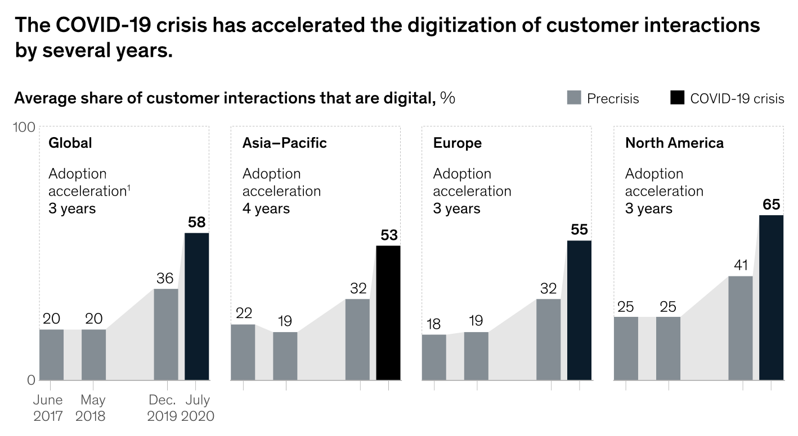
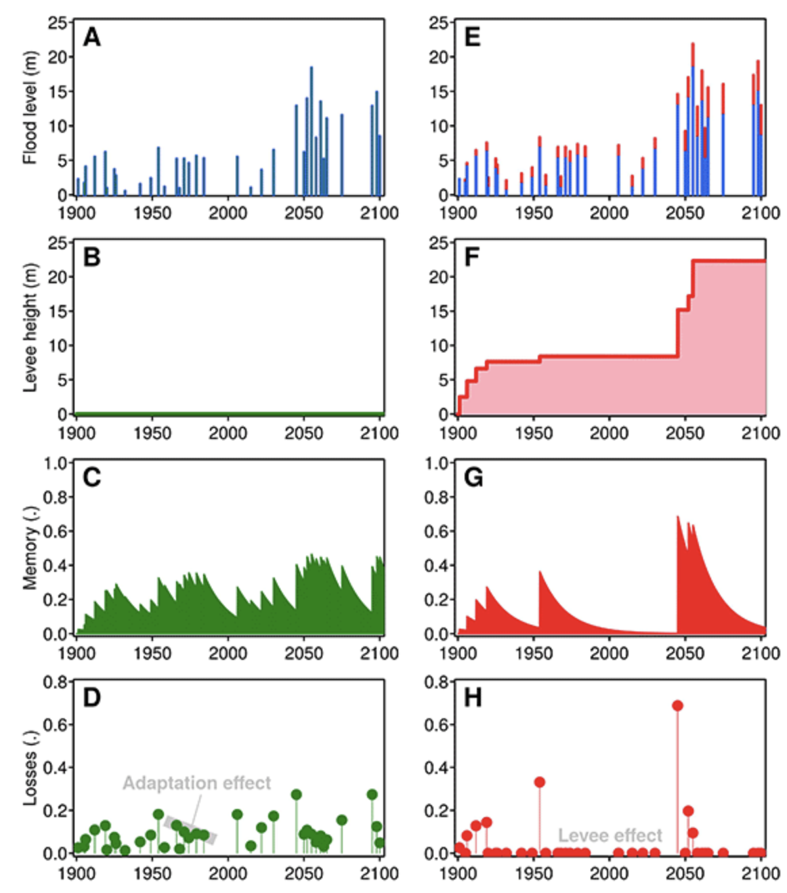
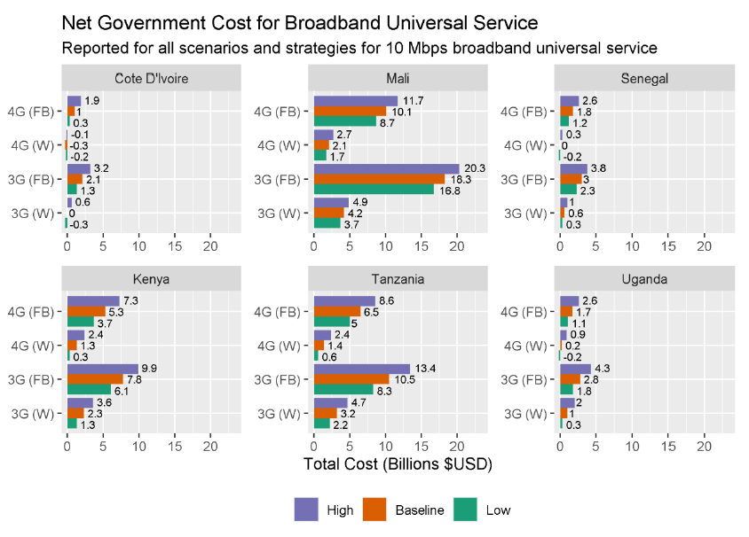
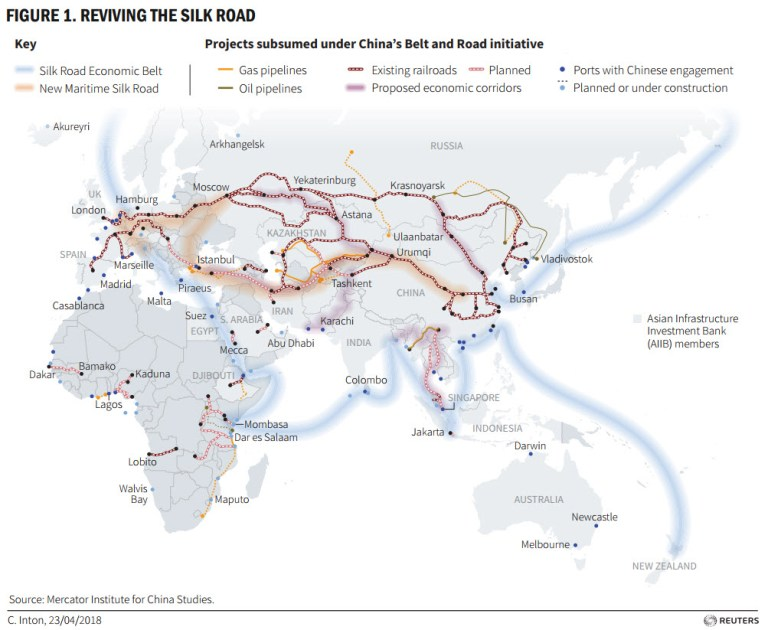

In this lecture, we will look at three additional critical factors that determine the need and success of future infrastructure provision. These factors include the changes in societal norms with regards to infrastructure use, the different planning pathways towards success, and the feedbacks between society and infrastructure and intra-infrastructure feedbacks.
In mini-lecture 13.1 and 13.2, we explored the underlying drivers and ways in which we can predict the future need for infrastructure. However, apart from uncertainties in the underlying drivers, there are other factors that need to be considered for future infrastructure provision, in order to understand how infrastructure networks might expand and how they may be used.
Three critical factors are considered in this lecture:
Societal norms might change, which can change the use of infrastructure. For instance, the transition towards renewable energy changes the electricity networks. Moreover, COVID-19 has shown that societal norms might change (e.g. working from home), which change the way infrastructure is being used.
There are important feedback loops and infrastructure lock-ins, which need to be considered. For instance, improved infrastructure systems that connect rural to urban areas might initiate migration to urban centres.
There are different ways that infrastructure can be provided in the future (e.g. construct one big road versus a couple of smaller ones), which change the underlying network structure and hence use.
The COVID-19 pandemic has been an unexpected test of the resilience of infrastructure systems. As covered extensively in Lectures 9-11, the resilience planning of infrastructure was mainly focused on natural hazards or other external shocks. However, in the case of COVID-19, infrastructure has not been physically damaged, but the pandemic has profoundly changed the ways in which people are using its services.
This has therefore also changed many infrastructure development projects. For instance, airport expansions might be put on hold due to expected drop in global flights in the near future, and COVID-19 has made people reluctant to use public transport. Many governments had to step in to save train operators and airports from financial collapse.
However, COVID-19 has boosted the dependence on digital communications infrastructure to facilitate working from home. In Figure 13.3.1, the acceleration of digitisation in the business environment is depicted, setting the scene for what is expected to grow even further in the near future (McKinsey & Company 2020).
The pandemic has also reinforced appreciation for the benefits of walking, cycling and green spaces, which will be reflected in the way urban areas are being rehabilitated and new urban areas will be designed.
There is an expected acceleration of green infrastructure projects, which are included in ‘green recovery’ plans, which help to build back from the COVID-19 pandemic while accelerating sustainability efforts.
The pandemic therefore will reshape the way we think and use infrastructure for many years to come.

Figure 13.3.1: An illustration of the rapid increase in digitisation of customer interactions due to the COVID-19 pandemic (McKinsey & Company 2020)
Infrastructure can lock-in development by stimulating urban expansion into areas that were initially hazard-prone or create new urban areas in initially unconnected areas.
Construction of infrastructure, such as flood protection works and reservoirs may provide a false sense of safety and may even lead to a reinforcement of the risk to people. In 1942, Gilbert White coined the concept of the ‘levee effect’ (White 1942).
This can be illustrated through the series of figures below on the right-hand side (Figure 13.2.2). The increase in levee height over time results in lower overall losses, generating a false sense of security due to memory loss of the event. This can encourage the growth of settlements in these initially at-risk areas. Should a large flood event happen, resulting in embankment failure, it may trigger a large loss event. This would trigger additional investments in the protection works. This cycle of flood - levee upgrade – memory loss – settlement increase – flood – levee upgrade, would keep on going until this situation is rigorously changed (and at high cost).
On the other hand (left-hand side in Figure 13.3.2), a similar scenario without levees creates more frequent loss events, but society gradually adapts to it, preventing large-scale, disastrous losses (Di Baldassarre et al. 2015).
In other examples, the construction of infrastructure can lock-in development in certain regions. For instance, it has been shown that creating new roads will stimulate economic development in the initially unconnected areas (Alam et al. 2019). However, in other cases, the connection of initially unconnected villages may lead to a widespread migration from rural to urban areas.
Therefore, it is essential to consider what the wider feedback processes are between infrastructure provision and society.

Figure 13.3.2: An illustration of the levee effect on the right-hand side, showing how the construction of levees can result in low risk compared to the situation without levees, but can cause very extreme losses if the levees fail. This loss event will in turn stimulate additional investments. For the normal scenarios, losses will not change much over time due to the adaptation effect of people not settling in these areas (Di Baldassarre et al. 2015)
In the case that an infrastructure target is set, or demand for infrastructure is forecasted to change, there are often still uncertainties around how to achieve this goal most efficiently. In most cases, multiple strategies can be considered. For instance, countries can build new ports or expand existing ones to meet future trade demand. Alternatively, different strategies exist to expand piped water supply and electricity to rural areas.
In this section, we will explore this issue in detail for the example objective to provide universal access to broadband internet in Africa at a service of 10Mbps, which is the aim set by the UN Broadband Commission. Oughton (2021) explored the different infrastructure and service provision strategies to meet this target. In this paper, the costs and technology requirements were calculated per strategy (four strategies, 3G/4G and wireless or fixed) (Figure 13.3.3).
It was found that directly leapfrogging into 4G+wireless backhaul is the most cost-efficient strategy instead of going from 3G to 4G, in particular to connect rural areas. Moreover, it was found that the number of people that can be connected differs per country, from half the population in Uganda to almost 100% in Cote d’Ivoire. In addition, infrastructure sharing (infrastructure shared between operators) can significantly decrease cost, especially in reaching rural areas.
This example shows the many potential pathways to meet infrastructure needs in the future, which all have inherent benefits and drawbacks. For rapidly developing regions in particular, exploration of various pathways is essential to prevent lock-in patterns of unsustainable infrastructure provision.

Figure 13.3.3: The costs of achieving broadband universal services in six countries in Africa for four infrastructure provision pathways (3G vs 4G and fixed vs wireless) (Oughton 2021)
So far, we have looked at projecting demand for individual infrastructure systems. However, as discussed in Lecture 8, infrastructure systems are interconnected with one another. Therefore, complementary infrastructure provision is often needed.
In the previous example, for instance, the extension of telecommunications infrastructure needs to be accompanied by the expansion of electricity networks. For port infrastructure for instance, access to roads and railways in both the port and the hinterland area are critical to make the investment a success. These infrastructure feedbacks can therefore be local, regional or even global. A prime example is the Belt and Road Initiative (see Figure 13.3.4), which is a trillion-dollar investment portfolio to better connect China with the rest of the world. In order to do this, both the land and maritime transport and energy infrastructure, in China and many other countries, will be expanded to facilitate this increasing connectivity. This shows the true interconnected nature of infrastructure expansions.
These interactions need to be kept in mind when planning for infrastructure expansion. For instance, when plans are made to extend the electricity network to initially unconnected areas, the planning should keep in mind that other infrastructure investments might follow in the near or distant future, such as telecommunication, transport or water treatment, which need additional electricity to function.
In short, sketching out what type of societal and infrastructure feedbacks are to be expected, and how complementary infrastructure investment can be made, help to roll out infrastructure services in a more efficient way.

Figure 13.3.4: The portfolio of planned projects under the Belt and Road Initiative (Brookings 2019)
In the lecture we discussed additional critical factors for sustainable and efficient future infrastructure development, which including taking into consideration societal norms and feedbacks, and possible infrastructure pathways and complementary infrastructure needs. This lecture highlights that these factors need to be identified before infrastructure plans are made.